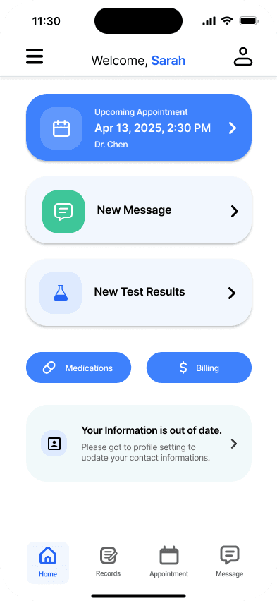
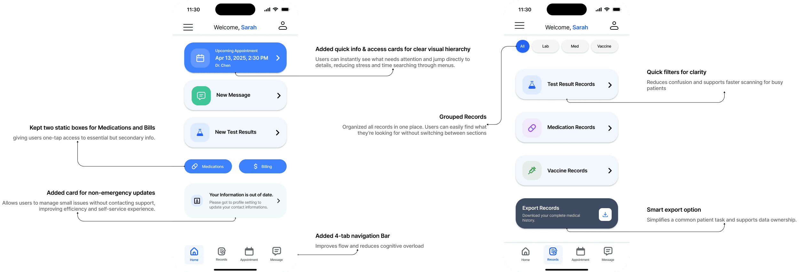

05 / COURSE PROJECT · HEALTHCARE
MyChart
A clearer next step for patients.
A patient portal redesign built on a heuristic evaluation of the real app, so common tasks stay within reach when a patient’s attention is limited.

THE BRIEF / 60-SECOND OVERVIEW
A clearer next step for patients.
The problem
Patients may arrive worried or distracted. Evaluating the real app against usability heuristics, I found three things that add work at the worst moment: logins fragmented across hospitals, cluttered database-style menus, and raw lab results with no context.
The approach
I made one login work across healthcare providers, organized navigation around the tasks patients do most, and paired lab results with range indicators and a way to ask about them.
01 / PROBLEM
Three frustrations that make health tasks harder to begin
I evaluated the real MyChart app against usability heuristics. Three problems stood out, and each one connects to how stressful it can already be to check health information.
01
Fragmented logins
Each hospital needs its own sign-in.
02
Cluttered, database-style menus
Finding a result, message or visit means digging.
03
Raw lab results without context
Numbers arrive with no explanation, which can cause anxiety.
02 / DESIGN DIRECTION
Clarity, control and empathy
Three principles guided the redesign, each answering one of the problems above.
Clarity
Group information and cut the menus down to what patients actually come for.
Control
Give common actions a visible entry point, and one login across providers.
Empathy
Account for uncertainty and limited attention, especially around test results.
03 / EXPLORATION
Reorganize the hierarchy before styling it
The early concepts explore navigation, grouping and visible actions. The wireframes make those relationships explicit before color and typography are applied.

04 / BEFORE & AFTER
A clearer starting point
The redesigned home screen puts the upcoming appointment, new messages and new test results up front as quick-access cards, with a four-tab bar for everything else. Records are grouped in one place with quick filters. A calmer screen still needs enough context to help people interpret what they find, which is why lab results carry range indicators and an option to ask about a result.


05 / INTERACTION DESIGN
Connect information to the next action
These boards annotate the main changes: quick-info cards for a clear hierarchy, grouped records with filters, a four-tab navigation bar, and a simple way to export records.


06 / VISUAL DESIGN
Carry the hierarchy through the screens
The final screens apply one typography and color system across login and organization switching, the home screen, records, messages, appointments and lab result details, so repeated information and actions stay recognizable.

07 / VALIDATION
Informal feedback so far, patient testing still to do
The heuristic evaluation drove the redesign. Beyond that, I talked with classmates who use the app and gathered informal feedback. I haven’t yet tested the redesign with patients in a structured way.
The test I’d run: ask patients to find a recent result, explain what they think it means and say what they would do next.
08 / REFLECTION
Evaluate understanding, not just navigation
The project centers on empathy, simplification and contextual communication. The open question is whether the new hierarchy helps people understand a result as well as find it. A task-based test would show whether range indicators and the option to ask about a result reduce worry or just move it.